ダイアグラムエディタでは左側のパレットからテーブルや関連を配置することができます。
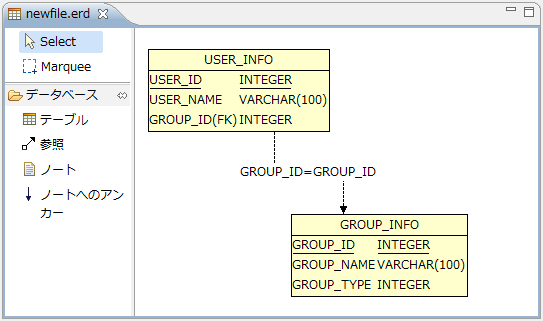
テーブルや関連の詳細情報を編集するにはダイアグラム上で該当のオブジェクトをダブルクリックします。 すると、詳細情報を編集するためのダイアログが表示されます。
テーブルの詳細情報を編集するためのダイアログは以下の4つのタブからなります。
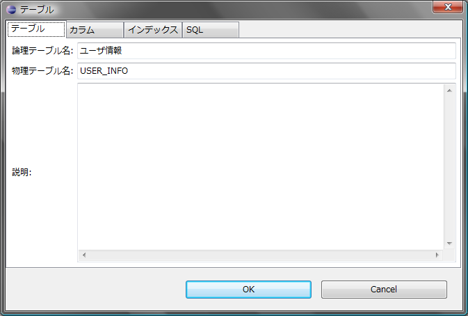
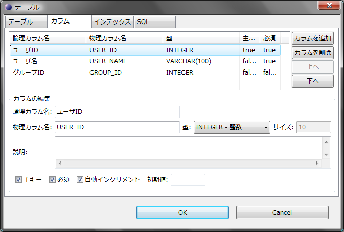
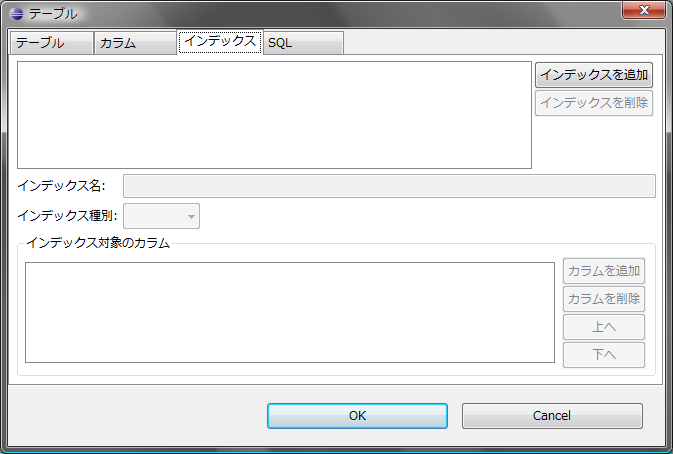
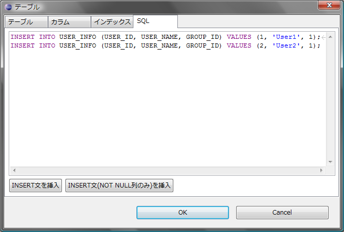
ダイアグラム上で関連をダブルクリックすると以下のようなダイアログが表示され、 外部キーの名称と、外部キーを参照するカラムを選択することができます。
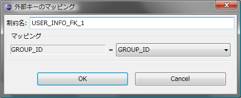
アウトラインビューにはテーブル情報、ドメインが一覧表示されるほか、ダイアグラムのサムネイルが表示されます。
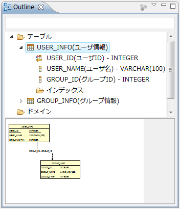
アウトラインビューでテーブルやカラムを選択するとダイアグラム上でも選択状態になります。 また、アウトラインビューでテーブルやカラムをダブルクリックすると編集することができます。 アウトラインビューではテーブル名を絞り込み検索することができます。
ダイアグラム上で[CTRL]+[O]でクイックアウトラインを表示することができます。 クイックアウトラインでもアウトラインビューと同様、テーブル名を絞り込み検索することができます。
ダイアグラム上で右クリック > [自動レイアウト]を選択するとテーブルが自動的にレイアウトされます。
また、Eclipseの設定ダイアログのAmaterasERDのページではダイアグラムにグリッドを表示して位置合わせを行いやすくしたり、 他の図形にスナップする設定を行うことができます。
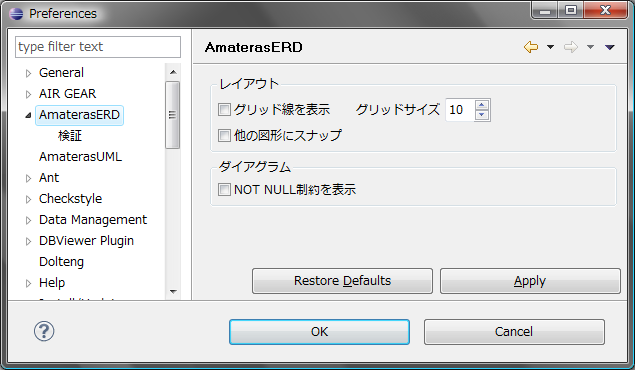
ダイアグラムは論理名での表示と物理名での表示を切り替えることができます。 論理名表示と物理名表示の切り替えはダイアグラム上で右クリック > [論理/物理表示を切替]で行います。
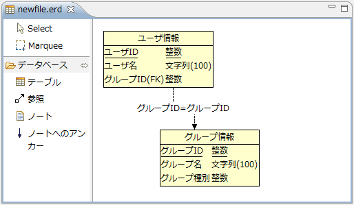
また、Eclipseの設定ダイアログのAmaterasERDのページで[NOT NULL制約を表示]にチェックを入れておくと、 ダイアグラム上にNOT NULLかどうかが表示されるようになります。
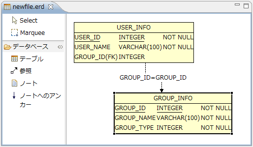
AmaterasERDで作成したER図をWindows XP環境とWindows Vista/7環境の両方で参照する場合など、 フォントの違いによってダイアグラムの表示が崩れてしまうことがあります。 このような場合のためにダイアグラムの表示に使用するフォントを明示的に指定しておくことができます。
ダイアグラムのフォントはダイアグラム上で余白をクリックした状態でプロパティビューから設定することができます。
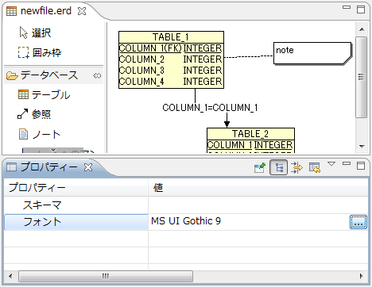